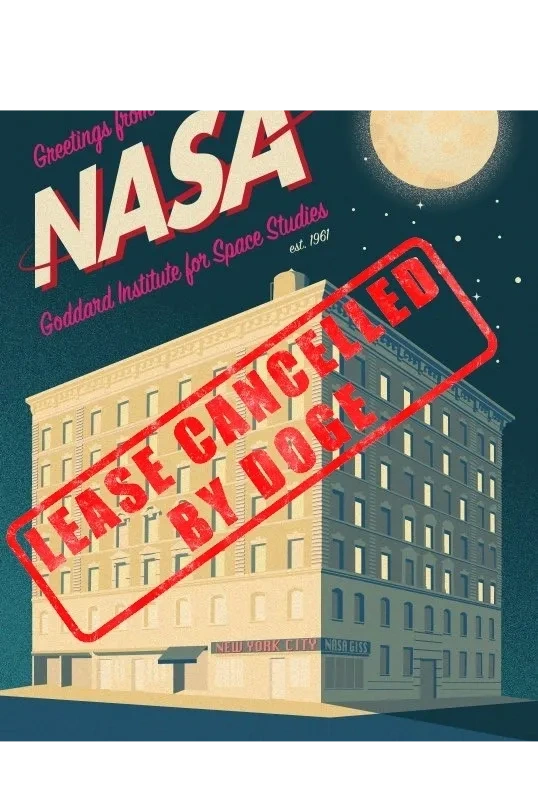

NEWS
Trump administration cancels top NASA climate lab’s lease at Columbia University
— CNN
This iconic NASA office changed climate science forever. DOGE plans to kill it
- Fast Company
NASA office above ‘Seinfeld’ diner is a target of Trump budget shrinkage
— New York Times
Trump administration set to shutter iconic research center in New York
— Axios
IFPTE urges lawmakers to stop NASA from moving Goddard Institute for Space Studies out of their offices
— International Federation of Professional & Technical Engineers
'This is an attack on NASA.' Space agency's largest union speaks out as DOGE cuts shutter science institute located above 'Seinfeld' diner in NYC
— Space.com
Why is NASA shuttering this iconic institute in New York City?
— Scientific American
Godfather of climate science decries Trump plan to shut NASA lab above Seinfeld diner: ‘It’s crazy’
— Guardian